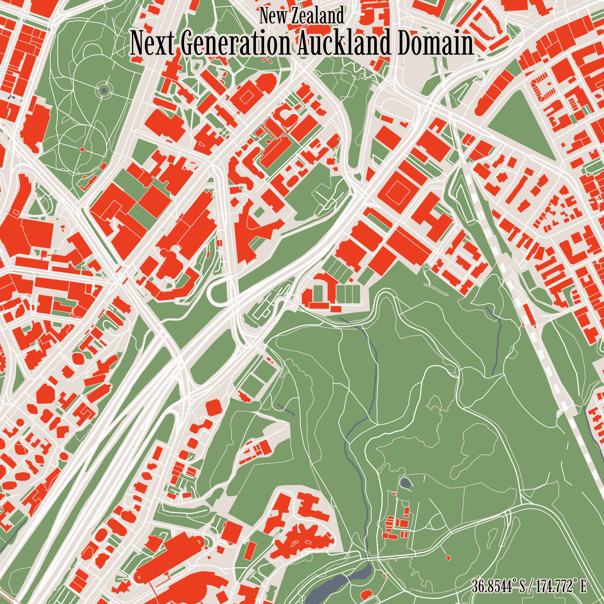

In a previous post I outlined how we can take a set of addresses scraped from Tennis NZs website and geocode them to get latitude and longitude coordinates. I’ve tried out a bunch of different techniques to analyse this dataset, including drive isodistances and point density mapping
In this post, I’ll be testing out a really easy way to make a map based on a set of coordinates, inspired by this LinkedIn post by Isaac Bain. In this post, Isaac shows how we can use the rcityviews package to take a set of coordinates and feed them into the rcityviews::cityview() function to return a nice map.
Lets take the first 6 tennis club addresses of set we scraped earlier.
Code
library(here)library(dplyr)library(reactable)df <-read.csv(here("inputs","tennis","tennis_coords.csv"))#We know the geocoding failed on some addresses, so we'll exclude thosedf_clean <- df |>filter(!is.na(latitude) |!is.na(longitude)) |>head()df_clean |>reactable(bordered =TRUE,highlight =TRUE )
Then, it’s super straight forward to make a map! Here’s the code for a single address. Simply use the new_city function to set the centre location of our map to our desired coordinates, and then use the cityview function to render the image. the rcityviews package does all of the hard work of connecting to OpenStreetMap and pulling the map data.
Code
library(rcityviews)# Create a new city objectcity <-new_city(name = df$name[1],country ="New Zealand",lat = df$latitude[1],long = df$longitude[1])p <-cityview(name = city,zoom =4, #we'll set the zoom a bit closer so we can see the courts. license =FALSE,theme ='modern',filename=here("example_nice_map.png"))print(p)

Example nice map. Hopefully we can see the tennis courts dead centre.
And here’s the code for running through our set of addresses. We can set our own style for the maps manually.
Code
# set theme for map appearancemyTheme <-list(colors =list("background"="#e6ddd6","water"="#656c7c","landuse"="#7c9c6b","contours"="#e6ddd6","streets"="#fafafa","rails"=c("#fafafa", "#e6ddd6"),"buildings"="#eb3e20","text"="#000000","waterlines"="#656c7c" ),font =list("family"="Imbue","face"="plain","scale"=3 ),size =list(borders =list(contours =0.15,water =0.4,canal =0.5,river =0.6 ),streets =list(path =0.2,residential =0.3,structure =0.35,tertiary =0.4,secondary =0.5,primary =0.6,motorway =0.8,rails =0.65,runway =3 ) ))# Loop through each tennis club addressfor (i in1:nrow(df_clean)) {# Extract tennis club details name <- df_clean$name[i] lat <- df_clean$latitude[i] long <- df_clean$longitude[i]# Create a new city object city <-new_city(name = name,country ="New Zealand",lat = lat,long = long )# Produce the cityview p <-cityview(name = city,zoom =4,license =FALSE,theme = myTheme ) output_filename <-here('inputs','tennis','maps',paste0(name,".png"))ggsave(filename = output_filename,plot = p,height =500,width =500,units ="mm",dpi =300 )}
And here’s the result!
A very easy to use library that has awesome options for styling the maps!
Source Code
---title: 'Fourth Set: Nice, Easy Mapping'date: '2024-09-05'categories: ['R', 'Geospatial','New Zealand']description: 'In this post, I try out a really easy way to make a nice minimalist map based on a set of coordinates.'author: 'Steven Turnbull'execute: message: false warning: falseeditor_options: chunk_output_type: consoleformat: html: code-fold: show code-tools: true---# Mapping made easy!In a [previous post](https://sturbull.github.io./posts/tennis/FirstSet_Webscraping_and_GeoCoding.html) I outlined how we can take a set of addresses scraped from Tennis NZs [website](https://tennis.kiwi/play/play-tennis/) and geocode them to get latitude and longitude coordinates. I've tried out a bunch of different techniques to analyse this dataset, including [drive isodistances](https://sturbull.github.io./posts/tennis/SecondSet_Drive_Isodistances.html) and [point density mapping](https://sturbull.github.io./posts/tennis/ThirdSet_Point_Density_Mapping.html)In this post, I'll be testing out a really easy way to make a map based on a set of coordinates, inspired by [this LinkedIn post by Isaac Bain](https://www.linkedin.com/posts/isaac-bain-4a0227172_nz-city-maps-ugcPost-7233959582157418497-StEs?utm_source=share&utm_medium=member_desktop). In this post, Isaac shows how we can use the [`rcityviews`](https://github.com/koenderks/rcityviews) package to take a set of coordinates and feed them into the `rcityviews::cityview()` function to return a nice map. Lets take the first 6 tennis club addresses of set we scraped earlier.```{r}library(here)library(dplyr)library(reactable)df <-read.csv(here("inputs","tennis","tennis_coords.csv"))#We know the geocoding failed on some addresses, so we'll exclude thosedf_clean <- df |>filter(!is.na(latitude) |!is.na(longitude)) |>head()df_clean |>reactable(bordered =TRUE,highlight =TRUE ) ```Then, it's super straight forward to make a map! Here's the code for a single address. Simply use the `new_city` function to set the centre location of our map to our desired coordinates, and then use the `cityview` function to render the image. the `rcityviews` package does all of the hard work of connecting to OpenStreetMap and pulling the map data. ```{r, eval = F}library(rcityviews) # Create a new city objectcity <- new_city( name = df$name[1], country = "New Zealand", lat = df$latitude[1], long = df$longitude[1])p <- cityview( name = city, zoom = 4, #we'll set the zoom a bit closer so we can see the courts. license = FALSE, theme = 'modern', filename=here("example_nice_map.png"))print(p)```{fig-align="center" height=90% width=90%}And here's the code for running through our set of addresses. We can set our own style for the maps manually. ```{r simple_plot, eval = F}# set theme for map appearancemyTheme <- list( colors = list( "background" = "#e6ddd6", "water" = "#656c7c", "landuse" = "#7c9c6b", "contours" = "#e6ddd6", "streets" = "#fafafa", "rails" = c("#fafafa", "#e6ddd6"), "buildings" = "#eb3e20", "text" = "#000000", "waterlines" = "#656c7c" ), font = list( "family" = "Imbue", "face" = "plain", "scale" = 3 ), size = list( borders = list( contours = 0.15, water = 0.4, canal = 0.5, river = 0.6 ), streets = list( path = 0.2, residential = 0.3, structure = 0.35, tertiary = 0.4, secondary = 0.5, primary = 0.6, motorway = 0.8, rails = 0.65, runway = 3 ) ))# Loop through each tennis club addressfor (i in 1:nrow(df_clean)) { # Extract tennis club details name <- df_clean$name[i] lat <- df_clean$latitude[i] long <- df_clean$longitude[i] # Create a new city object city <- new_city( name = name, country = "New Zealand", lat = lat, long = long )# Produce the cityview p <- cityview( name = city, zoom = 4, license = FALSE, theme = myTheme ) output_filename <- here('inputs','tennis','maps',paste0(name,".png")) ggsave( filename = output_filename, plot = p, height = 500, width = 500, units = "mm", dpi = 300 )}```And here's the result! ```{r, echo=F, fig.width = 20, fig.height = 30}library(patchwork)library(png)library(ggplot2)library(grid)plot_image <- function(image_path) { img <- readPNG(image_path) ggplot() + annotation_custom(rasterGrob(img, interpolate = FALSE)) + theme_void() + theme(plot.margin = unit(c(0.2, 0, 0.2, 0.1), "cm"))}# List of image pathsimage_files <- here('inputs','tennis','maps',paste0(df_clean$name,".png"))# Create ggplot objects for each imageplots <- lapply(image_files, plot_image)# Combine the plots using patchworkcombined_plot <- wrap_plots(plots, ncol = 2) # Display the combined plotprint(combined_plot)```A very easy to use library that has awesome options for styling the maps!